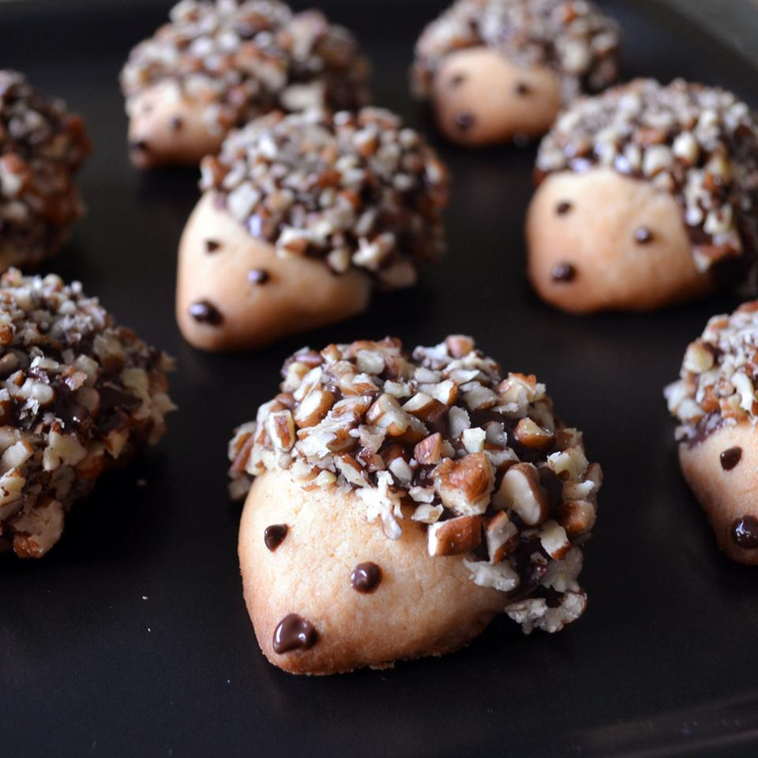

Hedgehog Cookies

Description
Cute hedgehog shaped cookies
Ingredients
- 4 Cups All-Purpose Flour
- 3/4 Teaspoon Baking Powder
- 1/2 Teaspoon Baking Soda
- 1/2 Teaspoon Salt
- 1 1/4 Cups White Sugar
- 1 Cup Butter-FLavored Shortening
- 1/4 Cup Corn Syrup
- 2 Eggs
- 1 Tablespoon Vanilla Extract
- 1 Cup Pecans
- 1 Cup Chocolate Chips
Directions
- Mix flour, baking powder, baking soda, and salt in a bowl. Whisk sugar, shortening, corn syrup, eggs, and vanilla extract in a separate bowl. Stir sugar mixture into flour mixture until just combined. Refrigerate dough until chilled, 30 minutes to 1 hour.
- Preheat oven to 350 degrees F (175 degrees C).
- Scoop cookie dough using a cookie scoop or 1 tablespoon so all the cookies are uniform; shape dough into teardrop-shaped cookies. Flatten the pointed side of each cookie to form the 'face'. Arrange cookies on baking sheets.
- Bake in the preheated oven until golden, 10 to 12 minutes. Cool on the baking sheets for 10 minutes before removing to cool completely on a wire rack.
- Pulse pecans in a food processor until finely chopped; transfer to a bowl.
- Melt chocolate chips in the top of a double boiler over simmering water, stirring frequently and scraping down the sides with a rubber spatula to avoid scorching.
- Dip the top of each cookie in the melted chocolate, spreading to fully coat the 'body' of each hedgehog. Press cookies, chocolate-side down, into the ground pecans forming the 'fur'. Arrange cookies on a sheet of waxed paper to set, about 30 minutes.
- Transfer the remaining melted chocolate to a piping bag or plastic bag with a corner snipped. Pipe chocolate onto the pointed end of each cookie for eyes and a nose.